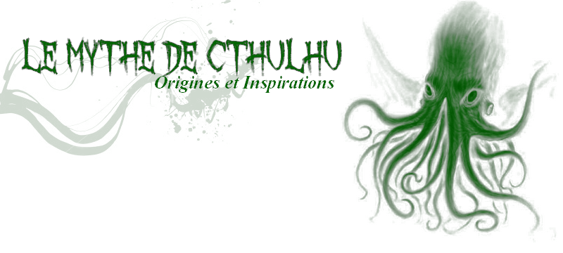

Les jeux inspirés de Cthulhu
Cthulhu ayant une grande influence dans la culture geek, il n'est pas étonnant que tant de jeux vidéos soient inspirés du mythe de Cthulhu. Mais le mythe de Cthulhu a également inspiré des jeux de plateaux !
Cthulhu saves the world
Cthulhu saves the world est un jeu de rôle indépendant sur PC créé par les développeurs de Zeboyd Games. Il est téléchargeable pour 2€ sur des plateformes de téléchargements légales de jeux comme Steam. Cthulhu est le personnage principal, qui a pour objectif de détruire le monde, il doit pour cela prouver sa valeur de héros à travers tout un tas de quêtes.Scribblenauts
Scribblenauts est un puzzle-game avec un soupçon d'action. Il est disponible sur Nintendo Ds, nous devons aider Maxwell, le héros, à résoudre de nombreuses énigmes. Dans l'une de celles-ci, le jeune héros doit combattre Cthulhu aux côtés de Dieu.Call of Cthulhu : Dark Corners of the Earth
Call of Cthulhu : Dark Corners
of the Earth est un survival-horror
sur PC
développé par Headfirst, interdit aux moins de 18 ans, prenant pour base le mythe de
Cthulhu.Call Of Cthulhu: Prisoner Of Ice
C'est un jeu d'aventure en point & click sur PC. Le jeu fut réédité pour Sega Saturn et PlayStation, exclusivement au Japon. Nous sommes plongés dans la Seconde Guerre Mondiale, dans la peau de l'amiral Ryan. Une étrange créature est enfermée dans une caisse de bois conservée dans la glace. Mais la créature s'échappe et massacre plusieurs personnes...L'Appel de Cthulhu : le Jeu de Cartes
L'appel de Cthulhu est donc un jeu de cartes comprenant six extensions, et de nouvelles paraissent tous les trimestres. Fantasy Flight Games a réalisé une vidéo pour introduire et expliquer les règles de ce jeu de cartes basé sur le Mythe de Cthulhu.Arkham Horror
C'est un jeu de plateau réalisé par Kevin Wilson & Richard Launius. C'est un jeu collaboratif qui se déroule dans l'univers du Mythe de Cthulhu. Chaque joueur incarne un investigateur qui doit aller fermer les "portails", des ouvertures sur notre monde qui permettent aux Grands Anciens (dont Cthulhu) d'apparaître dans notre monde. Les joueurs doivent pour cela traverser la ville pour accomplir leur tâche en trouvant des solutions.Ces deux jeux rencontrent un franc succès. En effet, il existe l'Arkham Night, un évènement spécial de trois jours consacré à ces jeux et à d'autres sur le thème du mythe de Cthulhu. Les joueurs se retrouvent à cette occasion pour disputer des parties de très haut niveau.

source : Fantasy Flight Games